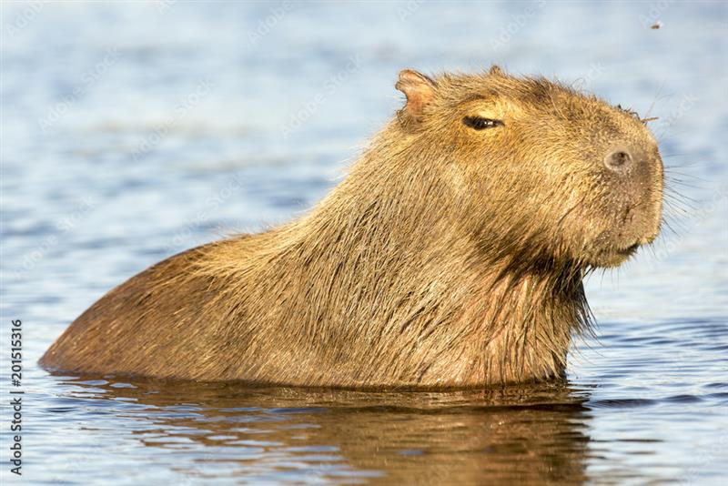

Capybara
Steckbrief
Name: Wasserschwein
Weitere Namen: Capybara
Name: Hydrochoerus hydrochaeris
Klasse: Säugetiere
Größe: 1 - 1,3m
Gewicht: 50 - 65kg
Alter: 6 - 10 Jahre
Aussehen: braun-graues Fell
Ernährungstyp: Pflanzenfresser (herbivor)
Nahrung: Wasserpflanzen, Wurzeln, Gräser
Verbreitung: Südamerika
Lebensraum: in Ufernähe von Gewässern
natürliche Feinde: Kaiman, Jaguar, Schlangen, Greifvögel
Sozialverhalten: Herdentier / Einzelgänger
Größte Nagetiere der Welt 🐹➡️🐘 – Capybaras können bis zu 1,3 m lang und 50–65 kg schwer werden.
Wasserliebhaber 💦🏊 – Sie verbringen viel Zeit im Wasser und können bis zu 5 Minuten unter Wasser bleiben.
Gesellige Tiere 👨👩👧👦 – Capybaras leben in Gruppen von 10–20 Tieren, manchmal sogar bis zu 100.
Vegetarier 🌿🍎 – Sie fressen Gräser, Wasserpflanzen, Früchte und sogar ihren eigenen Kot, um Nährstoffe besser aufzunehmen.
Sanftes Wesen ❤️🐾 – Capybaras sind friedlich, neugierig und vertragen sich oft gut mit anderen Tieren wie Vögeln oder Affen.
